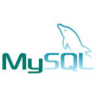
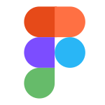
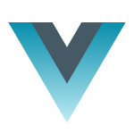
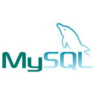
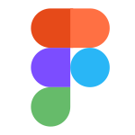
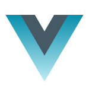

projetos.
Costumo realizar interfaces de usuários no figma em base de pesquisas sobre UI & UX, após ter elaborado a interface começo a codificar em HTML, CSS e JavaScript, para assim ganhar a experiência desejada no mercado de trabalho atualmente.
veja mais abaixo
tecnologias
Tecnologias que tive acesso e conhecimento ao longo do tempo.
Tecnologia WEB
-HTMl -CSS -JavaScprit -ReactTecnologias no geral
-MySQL -FigmaCompetencias
-Resiliência -Design Thinking -UI Design -UX Design 




